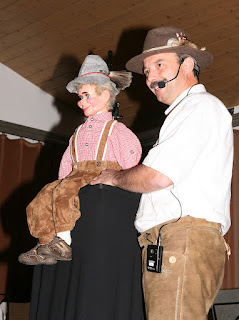

From Germany...
3/29/2012
{kind=link}

From Jack and Luggi: Three years ago we bought a really pretty puppet from you because I started as a ventriloquist in Bavaria. The success is fantastic and I never thought that people are so keen on watching that show. I have muchfun with my puppet, so I have one question to you:
Is it possible to send an instruction (manual or a document) to me about how to repair my puppet if it unfortunately breaks one time? The photo here is of Luggi and me during my Bavarian show! Kind Regards from Germany.
* * * * *
From Mr. D: I'm sorry, I do not have a "repair manual" for the figures. Should he ever need repair, I am available for advice. Every figure is uniquely different, but when repairs are needed I usually can give instructions needed via email. My son, Kevin, is available for that assistance as well (animatedpuppets@charter.net). Fortunately, the need doesn't arise often.
I can tell you Luggi's wig is only glued around the edges. Should the head need to be opened, I start at the nape of the neck cutting the wig free where glued using a Xacto knife with curved (convex) blade (carefully!), working from the nape upwards toward the top of the head, just far enough to expose the "door" in the back of the head. The door is glued in place. I use the same knife to cut through the glue seam to remove the "door". Mechanics are quite simple, and most repair procedures are self-evident. If not, and the need arises, contact me.